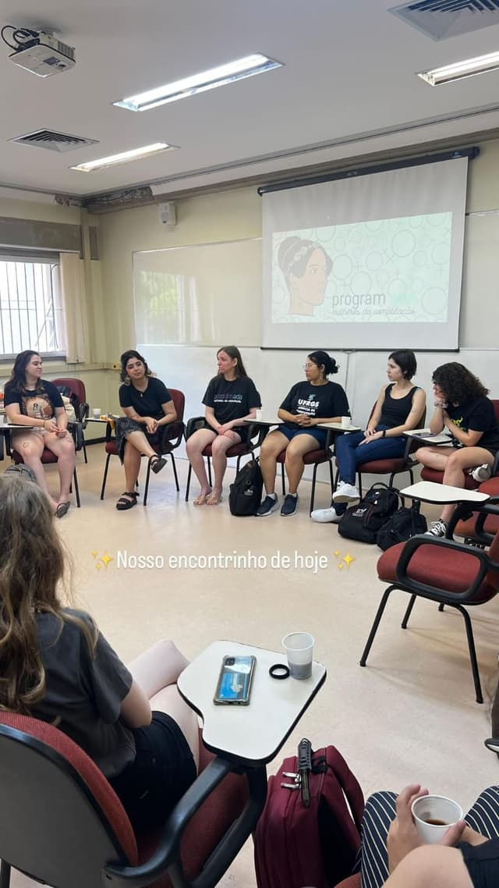

<div class="container-projetos">
    <div class="content-window" style="position: relative;">
        <div class="image-window" style="position: absolute; position: absolute; right: -50px; top: -70px;" id="projects-img-container">
            
        </div>
        <div class="window-header-projetos">
            <h2>Projetos 2024/2025</h2>
        </div>
        <div class="window-body project-body">
            <div id="projects-scroll-area">
                <div class="project-description">
                    
                    <h3>Portas Abertas 2025</h3>
                    <p>Uma oficina de programação em Portugol para o evento "Portas Abertas".</p>
                    <p>O grupo preparou uma apresentação sobre sua história e conduziu sessões de 30 minutos com os participantes, que tiveram uma boa adesão.</p>
                </div><div class="project-description">
                    <h3>Torneio Feminino de Programação</h3>
                    <p>Uma colaboração com o Laboratório de Programação Competitiva (LPC).</p>
                    <p>As atividades envolveram o auxílio na organização do torneio, monitoria das participantes durante a prova e a confecção de materiais de divulgação (artes e slides).</p>
                </div><div class="project-description">
                    
                    <h3>Cofferência - Roda de Conversa</h3>
                    <p>Um evento para divulgar o projeto Program.Ada para outras mulheres da instituição.</p>
                    <p>O grupo apresentou seu papel na comunidade e como o projeto foi criado.</p>
                </div><div class="project-description">
                    <h3>Torneio Feminino de Programação</h3>
                    <p>Uma colaboração com o Laboratório de Programação Competitiva (LPC).</p>
                    <p>As atividades envolveram o auxílio na organização do torneio, monitoria das participantes durante a prova e a confecção de materiais de divulgação (artes e slides).</p>
                </div><div class="project-description">
                    <h3>Ação nas Enchentes</h3>
                    <p>Uma iniciativa de voluntariado para ajudar vítimas das enchentes.</p>
                    <p>O projeto envolveu a arrecadação de fundos, a compra e distribuição de itens de higiene, roupas e alimentos para animais, além da organização de notas e formulários para prestação de contas.</p>
                </div><div class="project-description">
                    <h3>Carpool</h3>
                    <p>Um projeto de caronas solidárias, criado em resposta às enchentes.</p>
                    <p>O grupo organizou formulários e grupos para conectar colegas que precisavam de transporte para o campus.</p>
                </div>
            </div>
            <div class="carousel-nav">
                <button id="projects-scroll-up" class="nav-btn prev-btn">&lt;</button>
                <div class="scroll-bar-area">
                    <div id="projects-scroll-bar" class="scroll-bar"></div>
                </div>
                <button id="projects-scroll-down" class="nav-btn next-btn">&gt;</button>
            </div>
        </div>
    </div>
</div>
